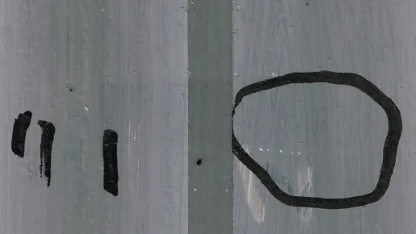

Animación experimental · Música visual
Pieza audiovisual que traslada condiciones de improvisación musical al proceso de animación dibujada a mano, articulando ritmo, movimiento y duración.
Improvisation no. 1: Cumulative Loops es el artefacto audiovisual de una improvisación en animación dibujada a mano y collage musical. La obra parte de riffs visuales dibujados sobre tiras de papel, luego digitalizados y ensamblados de manera aditiva con frases musicales, grabaciones descartadas, pistas ópticas rayadas de 16 mm y performances instrumentales improvisadas. [oai_citation:1‡luigi allemano](https://luigiallemano1970.wordpress.com/animation/)
La pieza explora la simultaneidad entre imagen y sonido, trasladando condiciones propias de la performance musical al proceso incremental de la animación. De ese modo, la obra propone una forma singular de generar y experimentar ritmo, movimiento, duración y tiempo en un campo unificado de imagen y sonido. [oai_citation:2‡luigi allemano](https://luigiallemano1970.wordpress.com/animation/)
La obra permite abordar la animación experimental como proceso rítmico y performativo, mostrando cómo la composición visual puede construirse desde procedimientos cercanos a la improvisación musical. También resulta especialmente útil para pensar la música visual como campo de traducción entre gesto gráfico, montaje y estructura sonora.
En el marco de esta plataforma, Improvisation no. 1 funciona como una referencia potente para estudiar relaciones entre cine abstracto, collage sonoro, temporalidad audiovisual y experiencia perceptiva.
Luigi Allemano venía alternando entre prácticas vinculadas a la imagen animada y al trabajo con banda sonora. En esta obra, según su propia presentación, explora una nueva dirección donde la composición de imagen y sonido opera como un único proceso integrado. [oai_citation:3‡luigi allemano](https://luigiallemano1970.wordpress.com/animation/)
En ese sentido, la pieza se inscribe dentro de un linaje de música visual y animación experimental donde la imagen no acompaña al sonido, sino que comparte con él una misma lógica compositiva.